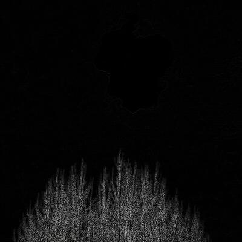

FOREST WORLD

The Forest World is a place I visited sometimes while
asleep.
The air is dense and you can perceive
darkness breathing all around you.
You can hear moths flap their wings.
You're not alone in the Forest World, never forget that.
Best case scenario is, a frog (they are your friends) gives
you the ability to become a frog in the Dream World and you're
allowed to remember YOU CAN JUMP. So you do jump, every time.
A terrible feeling invades the underneath of your skin after
you land on the ground : you made a noise, and now all of them
are going to get you. You pinch your cheeck but you can't wake up.
You imagine a revolver appearing in your hand. It's there.
You use it.